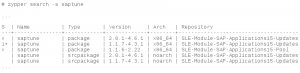

A new saptune is here!
July 22, 2019 | By: Sören Schmidt
The time of waiting is over!
If you now run a zypper search -s saptune, you will find the saptune version 2 in the repositories of "SLES for SAP Applications 12 SP2-4/15/15 SP1".
Because we run into some incompatibilities with the systemd version shipped with "SLES for SAP Applications 12 SP1" and it's near end of live on 31st of May 2020, we decided not to release it.

Some technical blogs about the new saptune are available here saptune – a deep dive
Although we already implemented a lot of the wishes from our customers and partners, the journey does not end here. We will continue to enhance and polish saptune further.
If you miss something or you think something should be done better, then don't hesitate to contact us at SapAlliance@suse.com.